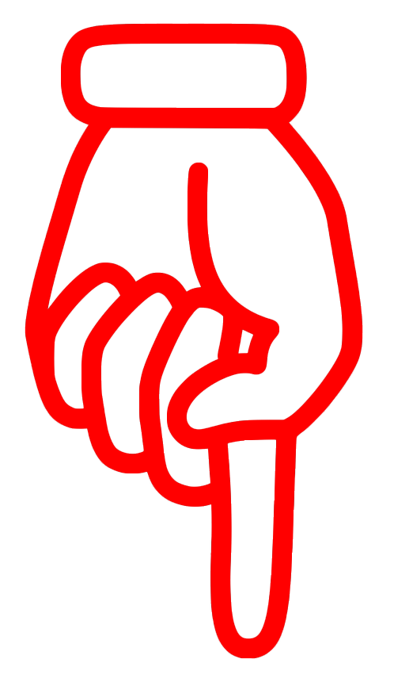

In this project I did several
attempts to unite the
subjective art world with the
so-called objective world of
big data and algorithms.
I investigated how I could
produce new works of art
by writing an algorithm for it.
While writing this algorithm,
I found out that algorithms
do not operate as objective
as we sometimes think.
With the art world as my
battleground, my aim is to
show that algorithms are as
subjective as our own
human gut feeling.
This project is an ongoing
extensive research into
the subjectivity of algorithms.

working method:
Observation
Formulate question
Do research
Conduct experiment
Formulate new question
Be surprised
Come up with several
ideas for final presentation
Create multiple works